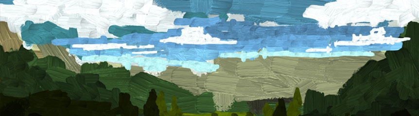
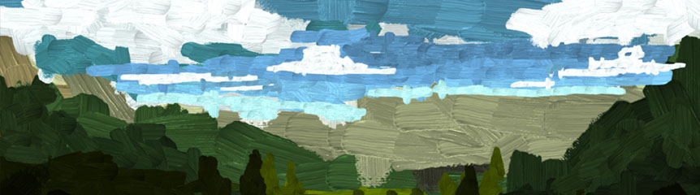
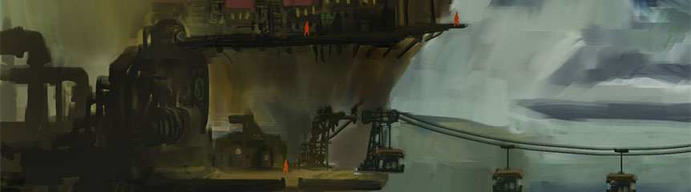
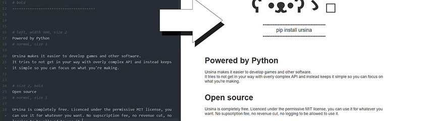
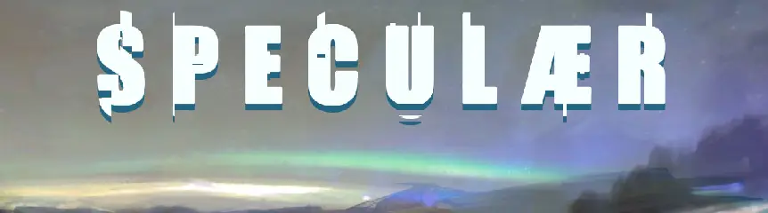
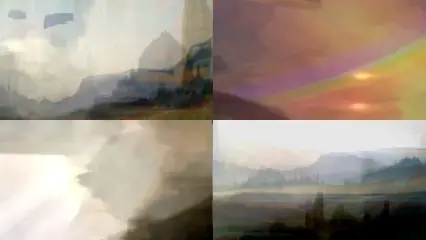
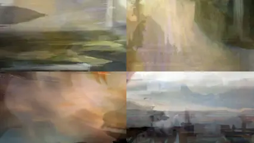
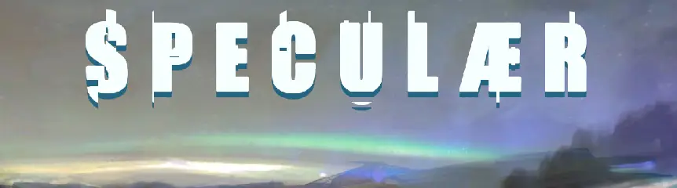
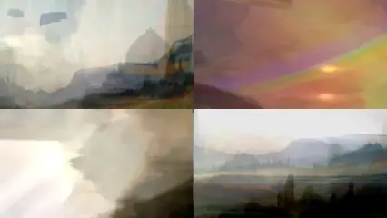
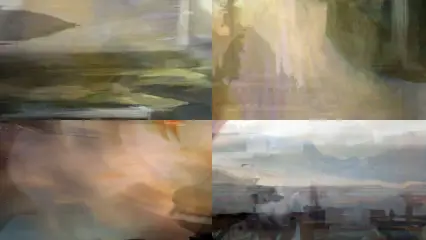

Petter Amland
GAME DEVELOPER, PROGRAMMER, ARTIST
pokepetter@gmail.com
Teslagrad 2
The sequel to the popular Teslagrad, featuring fast paced movement and
magnet based mechanics.
Worked on level design, 2d art and technical art.
Otosopp
https://pokepetter.github.io/taptapir_projects/otosopp/otosopp.html
A browser based drawing program. 
A browser based drawing program. 
Taptapir
An ursina-inspired 2d framework for the web/mobile.
 Supports sunsnake, a custom python-like that compiles into javascript.
Supports sunsnake, a custom python-like that compiles into javascript.

Supports sunsnake, a custom python-like that compiles into javascript.
Mesmer
https://mesmergame.com/
A game where you must gain the favor of the citizens and start a revolution.
Worked on 3d environment art, level design, shaders and tools.
Programmed several level building tools such as:
• Procedural houses.
• In-editor modeling tool for ground shapes.
• Automatic fence placement.
• Automatic pavement placement.
• Tools and a special shader for blending ground textures.
Value of Life
https://petteramland.itch.io/value-of-life-ld44
An artsy aventure game made for Ludum Dare.

Ursina
https://www.ursinaengine.org/
A fully featured 2d and 3d game engine with a straight-forward API, making it
easy to develop games and applications. Includes features such
as reloading of 3d models, textures, shaders and code, all while in-game.
Modern UI library written from scratch, procedural models, animation and tweening,
lots of shaders for effects such as triplanar mapping, texture blending,
stencil projection, matcap, lighting and more.
Has more than 400 downloads a day according to PyPi Stats.
sswg
https://pokepetter.github.io/sswg/
A Simple Static Website Generator inspired by markdown.

World to the West
https://worldtothewest.com/
An Action/Adventure/Puzzle game.
Worked on 3d environment art, level design and tech art.
Teslagrad
https://teslagrad.com/
A puzzle platformer featuring magnetism. Teslagrad has sold ~2 million copies. Worked on environment art, integrating graphics into the game and made a few levels.
A puzzle platformer featuring magnetism. Teslagrad has sold ~2 million copies. Worked on environment art, integrating graphics into the game and made a few levels.
Speculaer
https://github.com/pokepetter/Speculaer_Unity
Speculaer layers images to make abstract art. Quckly generate visual ideas when you don't know what to paint, just explore the world within the image.   
Speculaer layers images to make abstract art. Quckly generate visual ideas when you don't know what to paint, just explore the world within the image.   